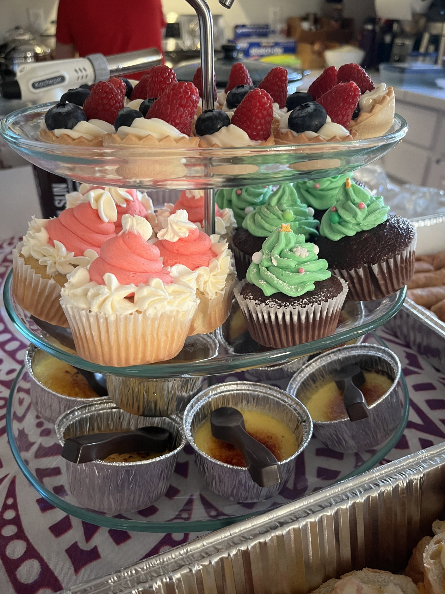

Crème Brûlée
Ingredients:
3 cup heavy cream
9 large egg yolks
7 tbsp sugar
2 tsp vanilla bean paste
6 tbsp sugar
Step 1: Set a dish towel on a large baking pan that holds 12-13 cups.
Step 2: Start a kettle to boil water.
Step 3: Blend yolks, cream, and vanilla on the lowest speed for 1 minute then let it sit for 1-2 minutes.
Step 4: Poor the custards into the cups and pop any large bubbles with a toothpick.
Step 5: poor the boiling water into the pan until it fills up half of the cups.
Step 6: Preheat the oven to 325 and bake for 37 minutes.
Step 7: Let it cool completely then refridgerate for 4 hours or overnight.
Step 8: Add 1 1/2 tsp of sugar on top and blow torch until golden and hard.